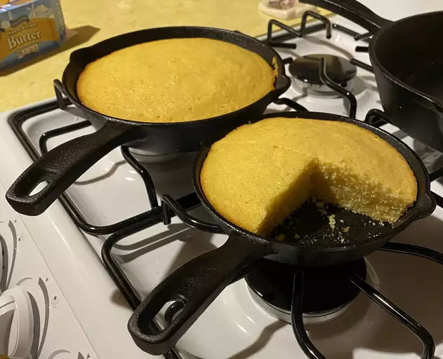

Cornbread Recipe

Delicious Grandmother's Buttermilk Cornbread
Everyone loves gradmother's cornbread! Right?
Ingredients
- 1/2 Cup of butter
- 2/3 Cup white sugar
- 2 Large eggs
- 1 Cup buttermilk
- 1/2 Teaspoon baking soda
- 1 Cup cornmeal
- 1 Cup all-purprose flour
- 1/4 Teaspoon salt
Steps
- Preheat the oven to 375 degrees F (175 degrees C). Grease an 8-inch square pan
- Melt butter in a large skillet over medium heat. Remove from heat and stir in sugar. Quickly whisk in eggs
- Combine buttermilk and baking soda in a small bowl; whisk mixture into the skillet. Stir in cornmeal, flour, and salt until well-blended and only a few lumps remain. Pour batter into the prepared pan
- Bake in the preheated oven until a toothpick inserted in the center comes out clean, 30 to 40 minutes